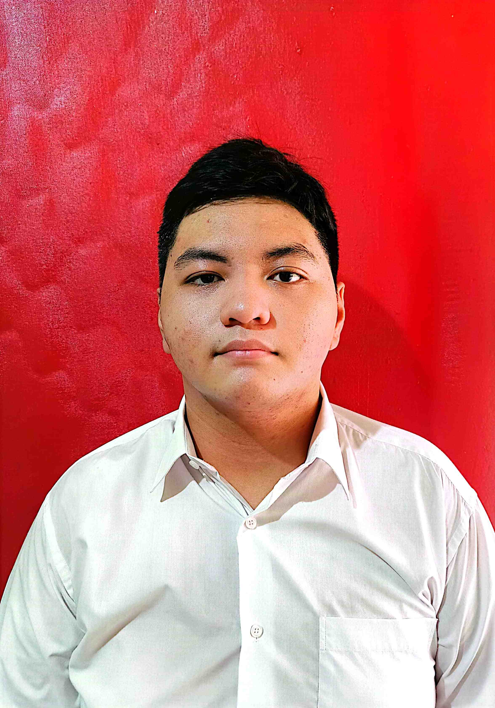

Christopher Ferdinand Darren Manalu
Jakarta, 1 September 2005
Mahasiswa Universitas Telkom Kampus Jakarta
Alamat: Jalan Pondok Jaya IX No. 2B, Mampang Prapatan, Jakarta Selatan, DKI Jakarta
Email: darrenmanalu0109@gmail.com | Telepon: 087884732683